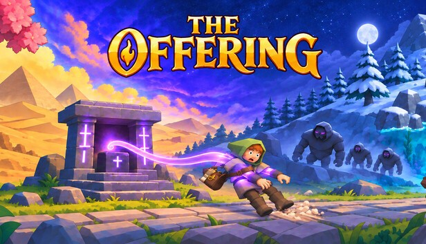
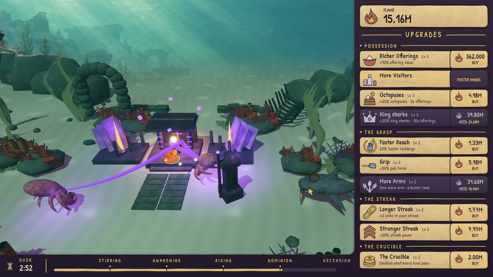
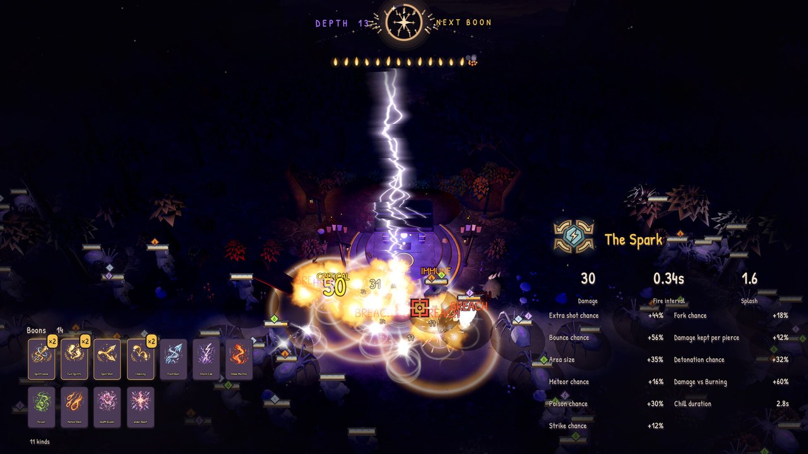
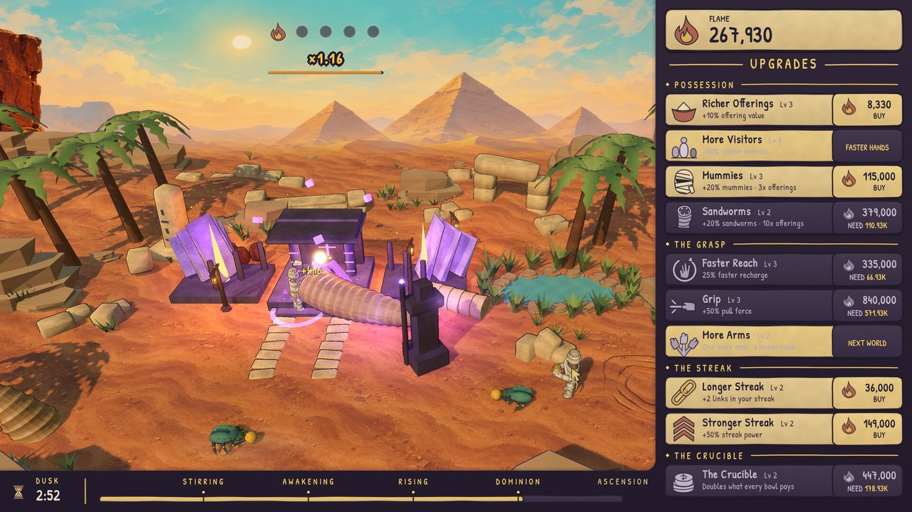
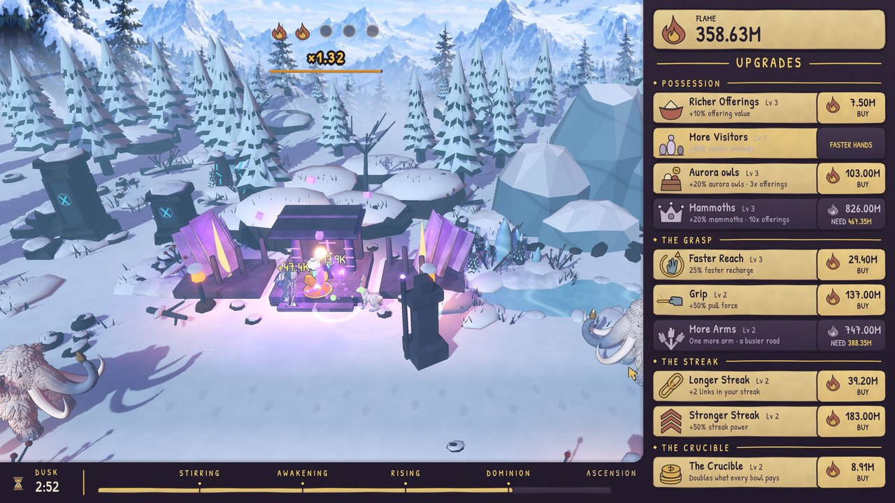
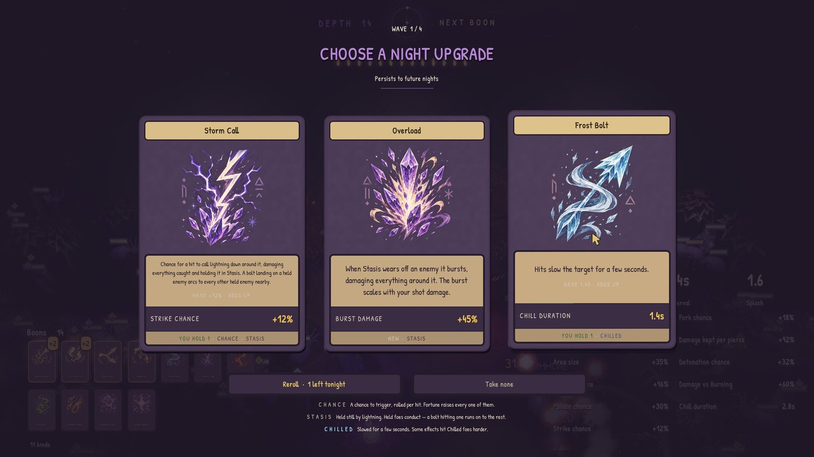
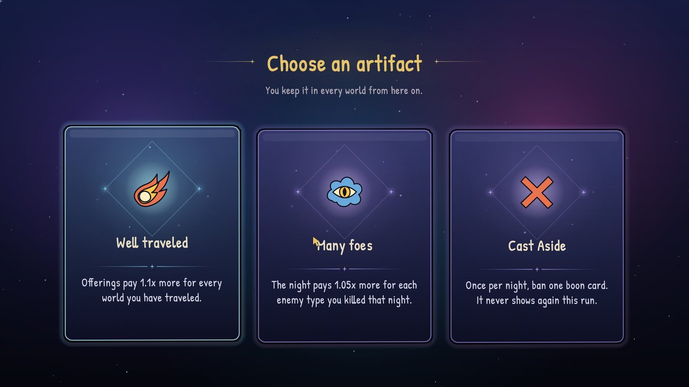

PRESS KIT
Everything a writer, streamer or curator needs for The Offering. The assets below are free to use in coverage — no permission required. Questions to press@naviandigital.com.
Fact sheet
- Developer — Dusk Moth Games (Steam renders it “Duskmothgames”)
- Publisher — Navian Digital
- Platform — PC (Steam), Windows
- Steam App ID — 5069510
- Release — 27 November 2026
- Demo — out now, and it includes all four worlds
- Price — not yet announced
- Genre — Casual, Indie, Simulation, Strategy
- Top tags — Incremental, Casual, Relaxing, Tower Defense, Idler, Action Roguelike, Resource Management, God Game
- Modes — single-player, offline, no online connection required
- Languages — 29, including English, French, German, Spanish, Italian, Japanese, Korean, Portuguese, Russian, Simplified and Traditional Chinese
Short description
The Offering is an incremental game where you grab creatures to collect offerings, buy upgrades and defend your shrine at night. Stack boons, forge weapons, catch goblins and ascend through worlds.
Description
Hold the mouse over the crowd and the shrine’s arms pull creatures to the altar. Every delivery pays Flame, and a streak of them pays more. There is no offline progress, so every number that goes up is one you pushed. When night falls the enemies come out and you hold the mouse to fire.
Grab what walks past
The arms reach into the crowd and carry creatures to the altar. Keep the deliveries coming without a break and the streak pays on top of each one.
Spend the Flame
Flame buys faster arms, more arms, richer creatures and longer streaks. New cards unlock as the shrine grows. Catch a goblin for a short boost.
Hold the night
Enemies come out of the dark and you hold the mouse to fire. Kills earn boons, duplicates stack, and the deeper you get, the more Shards you take home.
Keep the Shards
Shards go into a skill tree of permanent upgrades that make the next day stronger.
Ascend through four worlds
Max out the Forest and move on to the Desert, the Ocean and the Ice. Every world brings new creatures and bigger numbers, and each time you move on you choose one of three artifacts to keep for the rest of the run. The demo includes all four.
Features
- A day loop that pays Flame and a night loop that pays Shards
- Four worlds — Forest, Desert, Ocean and Ice — with an artifact pick between each
- Night boons that stack when they repeat
- A permanent skill tree bought with Shards
- No offline progress, no microtransactions, no online connection
- 29 languages
How the game was made
Stated on the Steam page and repeated here so coverage can be accurate: AI did most of the making — the code, the 3D creature construction, the interface and card art, the music, and the translation into 28 languages. No AI runs while you play, and the game needs no online connection.
Key art


Screenshots






Video
About Dusk Moth Games
Dusk Moth Games is the studio building The Offering. Follow it on YouTube, Bluesky, Instagram and TikTok.
About Navian Digital
Navian Digital is an independent games publisher, founded in 2026. It backs small games with systems you can read at a glance — no microtransactions, no live-service treadmill. Everything ships on desktop and is playable offline.
Contact
- Press & creators — press@naviandigital.com
- General — hello@naviandigital.com